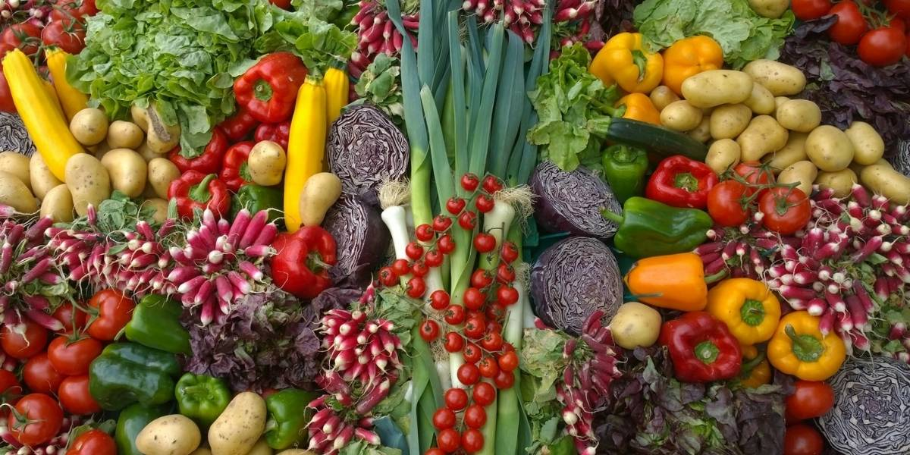
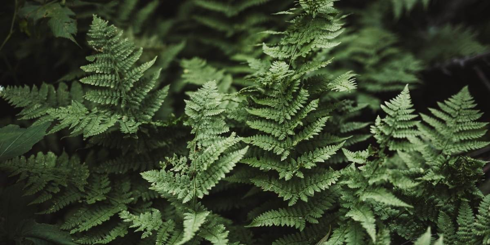
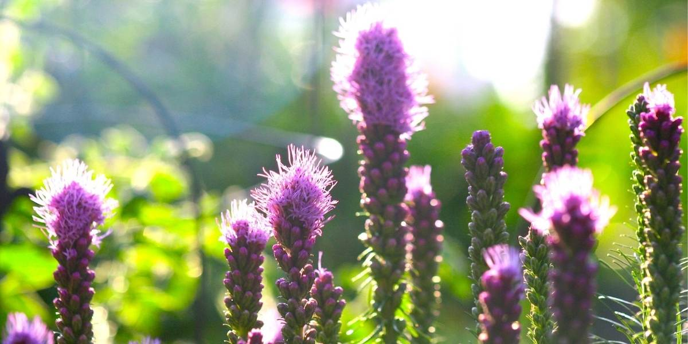

SUNNY & DRY
STYLE: CUTTING GARDEN
If you love making fresh flower arrangements, planting a cutting garden ensures you have lots of beautiful, homegrown blooms to work with.
| Cutting Garden |
|---|
| Black-Eyed Susan |
| Cosmos |
| Pincushion |
| Yarrow |
| Zinnia |

SUNNY & DAMP
STYLE: VEGETABLE GARDEN
Take it from us, "start small." Plan your plot based on the Companion Planting principle. Add flowers that attract beneficial insects.
| Vegetable Garden |
|---|
| Radish |
| Kale |
| Zucchini |
| Tomatoes |
| Green Beans |

SHADY & DRY
STYLE: FOILAGE GARDEN
You don't need flowers to create visual impact. Plant in clumps, massing 3-5 of the same plant together. Repition of texture and color will bring your foilage garden to vibrant life.
| Foilage Garden |
|---|
| Astilbe |
| Hosta |
| Coral Bells |
| Japanese Painted Fern |
| English Ivy |

SHADY & DAMP
STYLE: RAIN GARDEN
Planted with grasses and flowering perennials, rain gardens can be a cost-effective and beautiful way to recycle runoff from roofs and driveways.
| Rain Garden |
|---|
| Coneflower |
| Liatris |
| Switchgrass |
| Rose Mallow |
| Blue Flag Iris |